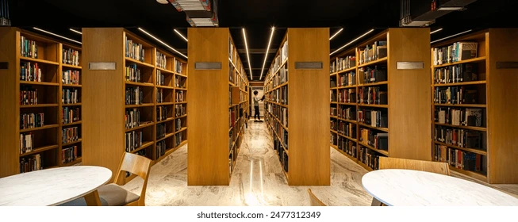
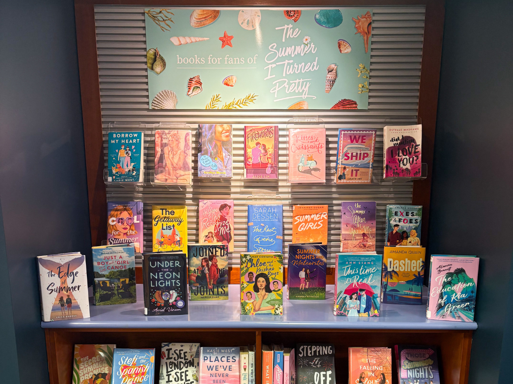

Search-centric
Slide into the stacks
Large central search, live results under the bar, and instant status for every format.
Instant results
Search-first mode
Use the navigation search above to explore the catalog. Results appear under the bar when you type, and each result can generate a checkout receipt.
Book image sources



Discovery
Spotlight shelves
Saved searches become shelves you can reopen in one tap.

Formats
Print + digital twins
See queue length, pickup desk, and eBook availability side by side.

Workflow
Hold ? Loan ? Renew
Place holds, borrow, and renew without leaving the search canvas.